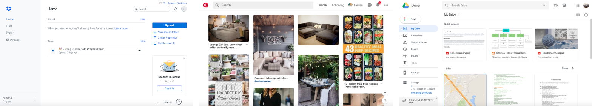

LM

In The Cloud
A cloud based storage application that gives users more of what they want and less of what they don't.
- UI/UX
- Branding & Identity
- Visual Design
Role:
- Figma
- Adobe Photoshop
- Invision
Tools Used:
- Competitive Analysis
- User Surveys & Flows
- User Personas
- Sketches
- Wireframing & Prototyping
- User Testing & Analysis
Deliverables Produced:
Problem
What was the problem? Better yet, why was this prompt created in the first place? As the role of the designer and developer, I had to figure out what other competitors had within their sites and what lacked based on user research. The top problems that came up was the inability to upload files from both desktop and mobile, sharing files in the platform to others users and non-users, and larger storage plans that incorporated more affordable prices.
Solution
Entering into the market of cloud storage, I wanted to build an application that gave users the freedom and ease of managing their content without limits of gaining access dependent on their current location. With this, I created a mobile application as well as a desktop site included features such as accessing files on and offline, having control over collaborating between files, and removing the constraints being put on consumers for adequate amount of storage needed and desired.
Process
Why is user experience so important? In simple terms, the users experience needs to be of utmost importance when designing a brand. An easily operated application means that the user will develop a relationship with the brand and thus keep coming back. Lacking in understanding when it comes to who the target user creates a volatile relationship with both the brand as well as the consumers. This is why when I sought out to gather information through surveys, user flows, and user research; I developed the personas based off the needs of the people rather than statistics. The results of the surveys taught myself that features like being able to organize files into folders and sharing a single item with another person, needed to be included as well as expanding the application to allowing access both offline and online.
Before moving onto developing a survey to gather information about what users want, I did a competitve analysis on three different storage websites; Dropbox, Pinterest, and Google Drive. Looking at these websites, I was able to formulate the questions that needed to be asked in order to gather the information from users.
User Surveys
Why is user experience so important? In simple terms, the users experience needs to be of utmost importance when designing a brand. An easily operated application means that the user will develop a relationship with the brand and thus keep coming back. Lacking in understanding when it comes to who the target user creates a volatile relationship with both the brand as well as the consumers. So, what exactly do users really want?

User Personas
Once the surveys were completed and the results had been gathered, the next step was to develop user personas. The two personas were created based on the audience that is expected to be using this platform.

Garrett
Role: Assistant Manager
Location: San Francisco, CA
Gender: Male
Tech Level: Casual
- Accessing files anywhere
- Connecting with others for collaboration
- Organizing files into folders and categories
Goals
- Pricing
- Not downloadable through a mobile app
- Files being deleted without doing so due to storage capacity
Frustrations

Cassie
Role: Storage Seeker
Location: New York, NY
Gender: Female
Tech Level: Professional
- Applications to offer storage with unlimited amount
- Ability to share files between clients
- Multi-use abilities with creating and uploading files
Goals
- Delay in uploading files
- Lack of options
- Inability to add users to projects
Frustrations
User Stories & Sitemap
The user stories and sitemap was developed to distinguish features that will be included into it’s priority and importance. Once that was sorted, I moved onto the user flows taking that information, focused on the priorities from the list to develop a site map for a better flow when it comes to laying everything out.
Wireframing
The development of wireframes held an important part of the design process because it allowed myself to analyze the structure and the responsiveness of the design. It also helped myself adjust interactions that could cause issues when the prototype was completed. The wireframes displayed here are detailing the basic construction of the placement and layout of elements that are unique to the project.


Branding & User Testing
During this phase, I collected the designs and research I had previously performed through user testing and established a high-fidelity mockups that could be tested through the clickable prototypes. In the beginning stages of the logo creation, I first sketched out possible options that we could develop into concrete designs. Once I narrowed down the idea and found a concept I liked, I then moved on to refining it into a monochromatic version that could be adjusted and display using the chosen color scheme.
Logo Design
Preference Testing
For the preference testing portion of the mockups, I analyzed three different designs with each have two variations. From the results, I was able to gather which display was more visually appealing to the users eyes.
Usability Testing
For the usability testing, the tests that were excuted were meant to gather results from different tiers of experience levels that could perform specific tasks. Having a broad range of expert levels provided me with valuable insight into changes and adjustments that needed to be made for better user usability.
The usability testing performed on our mockups were as follows:
The Conclusion
From start to finish, the endeavour to create an application that focused on cloud storage was both exciting as well as difficult. While designing and developing the project, I cultivated a better understanding of the importance of not rushing straight into the creation of a brand. It takes a lot of time and effort as well as research and feedback to build a successful brand. Without doing the important but necessary steps like creating user surveys and building site maps, it limits the designers ability to produce a product that will be accepted by users.